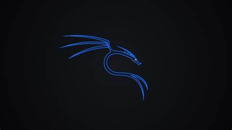

KALI-LINUX
Kali Linux é uma distribuição GNU/Linux baseada no Debian, considerado o sucessor do Back Track.[1] O projeto apresenta várias melhorias, além de mais aplicativos. É voltado principalmente para auditoria e segurança de computadores em geral. É desenvolvido e mantido pela Offensive Security Ltd.[2] Desde 21 de janeiro de 2016, é uma distribuição "rolling-release".[3]
O Kali Linux dispõe de numerosos softwares pré-instalados, incluindo o Nmap (port scanner), Wireshark (um sniffer), John the Ripper (crackeador de password) e Aircrack-ng (software para testes de segurança em [[Rede de computadores|redes)) sem fios).[1][4] O sistema pode ser utilizado a partir de um Live CD ou live-usb, além de poder ser instalado como sistema operacional principal. É distribuído em imagens ISO compilados para as arquiteturas x86, x64 e ARM.[5] O sistema chegou a aparecer em séries de televisão, no caso, Mr. Robot.[6]
Instalação
O Kali Linux permite a instalação em arquiteturas i386, amd64 e ARM (armel e armhf), para a arquitetura i386, a imagem do Kali, traz um kernel PAE por padrão, podendo assim ser executado em sistemas com mais de 4 GiB de RAM. O sistema pode ser instalado a partir de um DVD ou um Live USB, também permite a instalação via rede.
